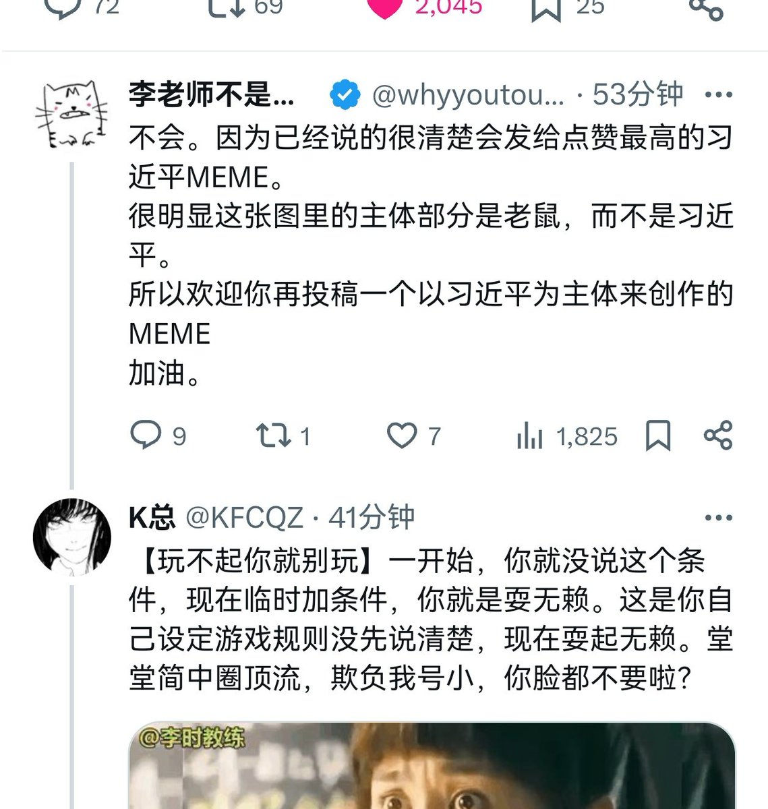

气态雨
@rainnnnn0423
🤣🤣🤣李颖真要哈气了，他确实格局不够。真坦荡就应该给k总发五千李币，听不得看不得接受不了一点批评这不是习近平吗？

K总
@KFCQZ
没人相信我是为了李币，我反而真怕李老师给我发李币。李颖还是读书少了，完全不懂商鞅变法“城门立木”的故事。如果他兑现承诺，虽然被我捣乱打脸，但反而对他是最有利的，诚信立起来。
反共圈顶流，就这种破格局，真不是我故意小瞧他们🤏🏻。 https://t.co/H0eUxj4Ece